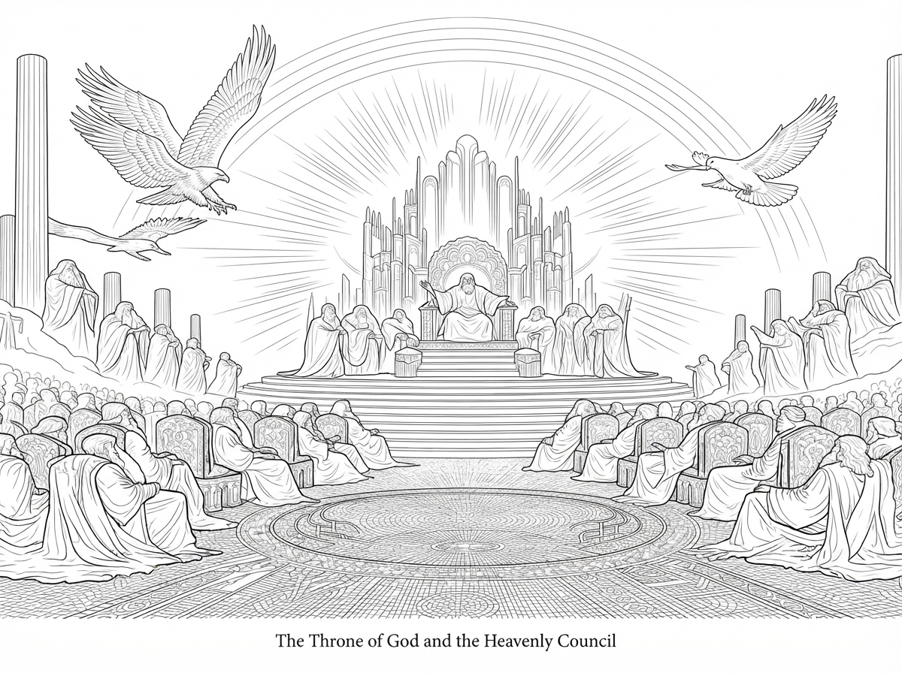

第 12 章，共 12 章
天上的寶座

從縫隙中長出的灌木，把峭壁裝點成永恆的綠色。夕陽將懸崖峭壁染上橘色和黃色。
今天，我高高地盤旋在懸崖之上。懸崖上有很多幼鷹，在練習俯衝和抓魚的技巧。
牠們讓我想起從前的自己。我回想起，當我還年輕的時候，我的金雕老師是如何教我的。
一隻年輕的老鷹停在我身邊。牠已經嘗試了一整天。我和牠交談，教牠仔細看魚往哪裡游，等候合適的時機，再從高處俯衝下去，把魚抓住。牠本來很不情願，但牠仍然嘗試我教給牠的方法。
後來牠抓到魚了。那次成功給牠帶來了喜悅。
然後，我繼續更詳細地教導牠屬靈的眼光。
「當你觀看事物的時候，先抬頭看太陽。順著光去看你眼前的一切。不要只看眼睛所能看見的，也要學著分辨那光照出來的善與惡。」
因為這是我自己學到的，所以我講得更詳細了。
年輕的鷹聽見了，便把這些話告訴其他的鷹。不久，幾隻年輕的鷹來到我面前，要求我教牠們。於是，我便帶著牠們一起飛翔，一起學習如何觀看。
屬靈的眼光是一隻一隻訓練的，就像我的金雕老師訓練我一樣。我想起牠可以忍受我的抱怨，又可以鼓勵一次又一次挫敗的我。

我看到在地上，我的主人耶穌也是這樣。祂挑選祂的門徒，也是一個一個訓練的。祂常常與祂的門徒在一起。雖然祂的門徒很尊敬祂，可是他們有的很有脾氣，有時也會彼此爭吵。我看到耶穌不是只在他們做得好的時候才與他們在一起。祂一邊帶著他們走，一邊教導他們。有時候，祂責備他們；有時候，祂耐心地回答他們的問題；有時候，祂什麼也沒有說，只是讓他們看著祂所做的事。祂一點一點地改變他們。
我願意與這些年輕的鷹永遠在一起。我的心歡暢，我的靈歡喜。我願意一直留在這片天空，看著這群幼鷹學會飛翔。我讚美我的主。我說：
「榮耀，榮耀，榮耀！」
我的眼睛看見祢，我定睛仰望祢，我的心單單向著祢。
我仰望太陽。一群金色的雕，從太陽的方向向我們飛來。是我的金雕老師和金雕同伴們。在牠們的身後，是兩個天使。是牠們派我去接那位被石頭砸死的司提反到天上的寶座前。我回想起那次飛行的筋疲力盡，但當他安全地來到寶座前時，我才發現，我的飛行又是多麼微不足道。
這次，我聽到天使叫我：
「來，接你下一個任務。」
牠們指示我接下來要做什麼。
在這次旅行中，我與眾多的金雕和天空中的天使一起飛翔。我們越飛越高，直到地上的山嶺漸漸消失在雲霧之中。當我們接近天堂的玻璃海時，我聽到了響亮的雷聲和可畏的隆隆聲，也聽到了敬拜的歌聲。我不知道接下來會發生什麼事。
我看到了一片非常大的玻璃海，晶瑩剔透。寶座被如綠翡翠一般的彩虹所環繞，閃耀著閃電，發出雷鳴。我看到圍繞著寶座、穿著白衣的人，頭上戴著金冠。我數著那些圍繞寶座的人。他們共有二十四位。
我看到寶座周圍有四隻偉大的活物。牠們在寶座前敬拜永生的創造主，也帶起天上敬拜的聲音。牠們飛著，牠們第一隻像獅子，第二隻像牛，第三隻的臉像人，第四隻像飛鷹。牠們每隻都有六個翅膀。牠們晝夜不停，整齊和諧地呼喊：
「聖哉！聖哉！聖哉！
主神是昔在、今在、以後永在的全能者！」

牠們的聲音壯大，響徹整個天上。每當牠們將榮耀、尊崇和感謝獻給寶座上的王時，二十四位長老就俯伏在造物主面前。他們把冠冕放在寶座前，說：
「我們的主，我們的神，
祢是配得榮耀、尊貴和權柄的，
因為祢創造了萬物，
並且萬物是因祢的旨意被創造而有的。」
天空中。我聽見天使彼此傳遞著聲音。整個天空變得非常嚴肅。他們開始預備著什麼。雖然沒有人直接對我說明，但在那些聲音中，我聽見了——
全地的審判，即將開始。
我想起了我的主人耶穌還在地上的時候。祂曾經告訴人，天國近了，應當悔改；祂也曾經警告人，有一天，審判必要來到。
是這時候嗎？
那一次，我在人群上空飛翔。有些人聽見了祂的話，不願意回轉，有些人甚至厭惡祂。我不明白，為什麼人會拒絕這位如此愛他們的主人。原來，祂所說的那一天，現在已經到了。我和所有的金雕都停住了翅膀，只在玻璃海上空盤旋。
坐在寶座上的造物主被榮耀的光環繞。祂的手中，有一個書卷。我聽到一位大能的天使大聲說：
「誰配打開那書卷呢？」
我聽見一個人在哭泣。是約翰。那位曾經跟隨我主人耶穌的約翰，我見過他。他看見天上地下沒有一個受造物配得打開那書卷，就大哭起來。
然後，我看到長老中有一位對他說：
「不要哭。看哪，猶大支派中的獅子，大衛的根，祂已得勝，能展開那書卷，揭開那七個印。
我漸漸明白，那書卷所封存的，是神對這個世界的審判。一旦書卷被打開，七個印一個一個揭開，地上的災難也將隨之展開。

然後，我看見我的主耶穌來到寶座前。祂像是被殺過的羔羊。我認得祂。那就是我的主人耶穌。
我想起祂被釘十字架的那一天。那時，我一直在哭。我問我的主人：
「他們這樣羞辱祢，祢為什麼不說話？」
祂從坐寶座者的右手中拿了書卷。那一瞬間，二十四位長老一起跪下，唱起了一首新歌：
「祢配拿書卷，配揭開七印；
因為祢曾被殺，用自己的血，
從各族、各方、各民、各國中買了人來，
叫他們歸於神；又叫他們成為國民，
作祭司歸於神，在地上執掌王權。」
我看到長老們唱完之後，無數的天使圍繞著寶座和長老們。他們唱著：
「被殺的羔羊是配得
權柄、豐富、智慧、能力、
尊貴、榮耀、頌讚的！」
我又聽見天上、地上、地底下、滄海裡，以及天地間一切被造之物，都發出讚美。天空中有飛鳥的鳴叫，海水中有生命的聲音，大地上也有各樣受造之物的聲音。牠們的聲音彼此交織，在天上形成一片美妙而壯闊的和聲。他們說：
「但願頌讚、尊貴、榮耀、權柄，
都歸給坐寶座的和羔羊，
直到永永遠遠！」
我抬頭看著那位羔羊。祂拿著書卷。我知道，接下來，祂要揭開第一個印。
我看到，神的審判，是一個印、一個印地揭開。羔羊揭開了七印中的前四個印。每當一個印被揭開，四活物中的一位便發出雄壯的聲音：「你來！」

於是，我看見四個騎士相繼出現。白馬、紅馬、黑馬、灰馬。他們來到地上，戰爭、饑荒、死亡，接連臨到。
第五印揭開了。我聽見那些為神的道作見證、卻被殺害之人的呼喊。他們在祭壇底下呼求：
「掌管一切的真實主啊！
祢不審判住在地上的人，
給我們伸流血的冤，
要到幾時呢？」
我聽見他們的聲音。那些曾經為主作見證的人，如今已經死了。他們沒有忘記神，也沒有否認祂的名。如今，他們在神面前呼求公義。我看見他們各人被賜了一件白衣。有聲音告訴他們，還要安息片時，等到與他們一同作僕人的、和他們的弟兄，也像他們一樣被殺，滿足了數目。
第六個印，接著揭開了，天上的星辰一顆一顆掉落地面，那好像無花果樹被大風用力搖動，無花果全部掉下來似的。山嶺和海島都被強力挪移。地震降臨，沒有人見過如此可怕的災難。我看到地上的君王在哭泣，說：
「倒在我們身上吧！把我們藏起來，
躲避坐寶座者的面目和羔羊的憤怒。」
我看到他們慌亂地尋找可以藏身的角落。有人跌倒在地，有人蜷縮在岩石後面，眼中充滿恐懼。沒有一個角落能夠藏住他們。沒有一座山嶺能夠遮住他們。
在天上，我看見被救贖的人類。他們是來自各國、各族、各民、各方的人。他們站在寶座和羔羊面前，身穿白色長袍，手裡拿著棕樹枝。
他們唱出的歌，是其他受造之物無法唱出的。因為那是經歷過眼淚、經歷過死亡，又蒙羔羊救贖之人的歌。他們一人又一人，一代又一代地被羔羊救贖。他們的歌聲柔和了天地的悲傷，也唱出了被救贖的喜樂。他們大聲喊道：
「願救恩歸與
坐在寶座上我們的神，
也歸與羔羊！」
我想起那位使徒約翰曾經說過：如果把耶穌所做的一切一一寫下來，就是全世界也容不下了。如今，我看著這些被羔羊救贖的人，忽然明白，他所說的又何止是耶穌在地上所做的事？每一個被救贖的人，都有一個故事。我望著那些被救贖的人，想起地上那些曾經哭泣的人。有些人的眼淚，我曾經從高空看見。有些人的痛苦，我曾經只能遠遠地看著。如今，在這寶座面前，我看到，沒有一滴眼淚被遺忘。
第七印揭開了，天空裡一片寂靜。
就像音樂的休止符停頓。
所有人都屏住了呼吸。
突然間，號角響起了。
有七位天使吹響了七隻號角，每個號角都吹開了一系列大而可畏的審判。我看見大地在震動，看見火與煙升起，看見人們在恐懼中逃散。我多麼盼望他們回頭。
「悔改啊！悔改啊！現在還有時間。」我在天空中呼喊。可是，我看見他們仍然不肯悔改。我看到其餘未曾被這些災所殺的人，仍舊不悔改，並且憤怒握拳咒詛上天。
我也看見地上有人偷竊。有人闖進鄰舍的家中，拿走他們積存的東西。災難來到，大地震動，人已經知道審判來臨。可是，他們仍然緊緊抓住自己的偶像和財物。他們仍然不肯回頭。我在天空中哭泣。為什麼呢？你們已經看見了這一切，為什麼還是不肯回到創造你們的主面前？
輪到我發聲了。當第四位天使吹響號角時，我知道我的時刻到了。我就在天空喊道：
「三位天使還要吹那其餘的號！
你們住在地上的民哪，
禍哉！禍哉！禍哉！」
我繼續在空中飛翔，又遇到了三位飛行的天使。其中一位正在向地上各國、各族、各方的人們宣講永恆的福音。原來，即使審判已經開始，福音的呼喚仍然沒有停止。我聽見他的聲音說：
「要敬畏上帝，將榮耀歸給祂，
因祂施行審判的時候到了；
應當敬拜那創造天、地、海和眾水泉源的。」
原來，在最後的審判來到以前，上帝仍然給人悔改的呼喚。
我知道，你們人類把這些事記在一本書裡，稱為《聖經》。其中還記錄了許多我沒有親眼看見的事。後來，我看見歷代許多暴君試圖燒毀、消除《聖經》，但是它反而一代一代廣傳。人們試圖熄滅我主人的話語，但是，那話語的亮光反而照耀全地。那本書，記錄了造物主，也記錄了祂拯救人的計畫。
而我們老鷹，也是這故事的一部分。
我曾經以為，我所看見的只是天空、山嶺、河流和大地。後來，我看見了耶穌。我看見祂走在人的中間，看見祂受苦，看見祂被釘在十字架上，也看見祂從死裡復活。我曾經把司提反帶到天上。如今，我又飛翔在寶座前，看見羔羊揭開書卷，看見萬物向祂俯伏敬拜。
我所看見的榮耀，就是我的主人。
「我告訴你們，若是他們閉口不說，
這些石頭必要呼叫起來。」
全書完